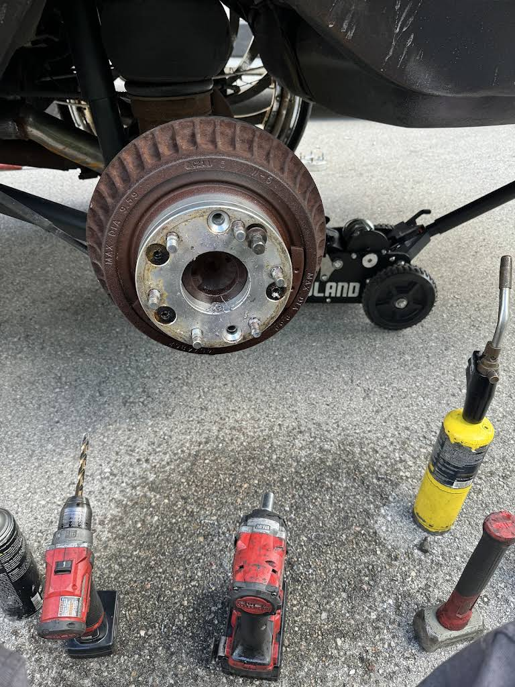

What To Watch For
Signs You Should Book
Common Symptoms
- Squeaking or grinding when braking
- Steering wheel or pedal vibration
- Soft or spongy brake pedal
- Vehicle pulls when stopping
- Brake or ABS warning light is on
Why It Matters
Not every squeal means new pads. Worn pads and rotors, a sticking caliper, a fluid problem and an ABS fault all feel a little different and need different checks. We look at the brakes first, then tell you what actually needs doing.

The Process
How The Work Gets Done
From Symptom to Fix
- Review the noise, pedal feel, vibration, pulling, or warning light you noticed.
- Inspect pads, rotors, calipers, hoses, and brake-fluid condition.
- Measure wear and investigate hydraulic or ABS concerns where indicated.
- Explain the findings and recommended parts or repairs for approval.
- Complete approved work and check braking operation before delivery.
A Brake Estimate Based on Inspection
- The affected axle and components identified in the recommendation
- Wear and condition considered alongside the reported symptoms
- Hydraulic and ABS concerns addressed when present
- Repair scope explained before you approve the work
Before You Call
Describe the Noise and Pedal Feel
Next Step
Contact the shop
FAQ
Common Questions
Can you quote a brake repair before inspecting it?
Not exactly. Pads only is a different job from pads, rotors and a caliper. Tell us the year, make, model and what it’s doing, and Tony gives you a firm price once he’s looked at it.
Does brake vibration always mean I need new rotors?
Not always. Worn rotors are common, but a sticking caliper or worn front-end parts can feel the same. We check before we sell you rotors.
Do you investigate ABS warning lights?
Yes. An ABS warning may need diagnostic testing as well as a physical brake inspection. Call (239) 397-2048 to explain the warning and book a shop appointment for your vehicle.
Keep Browsing